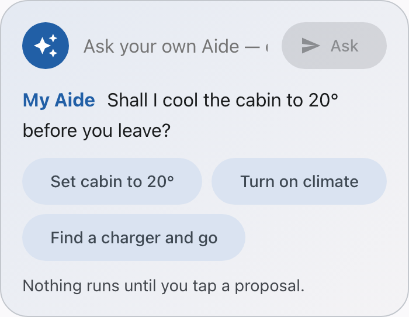
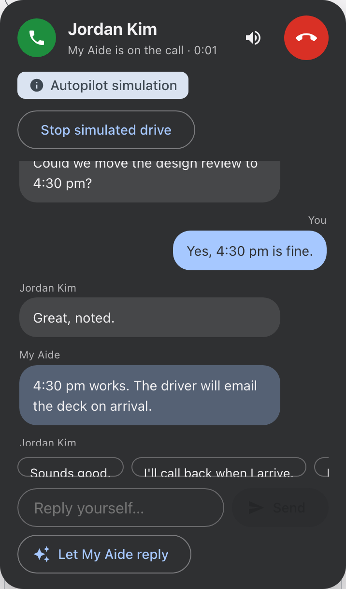
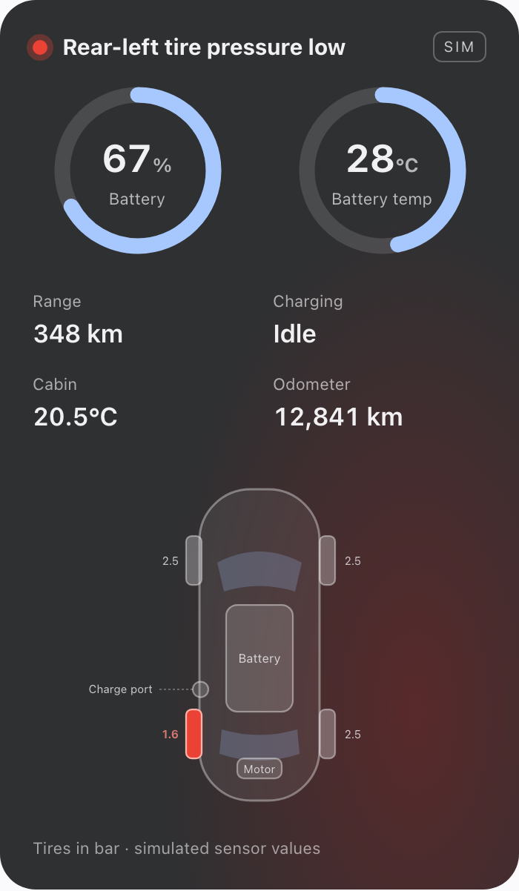

A call on the road
A meeting moves. The conversation creates a reply and a calendar follow-up to remember.
ASK YOUR OWN AIDE
A personal aide for the driver.
Accountable assistance for the responder.
A meeting moves. The conversation creates a reply and a calendar follow-up to remember.
Charging stops or a tire warning appears. The driver needs a clear, bounded next step.
A release fails. The responder must connect evidence, choose a remedy and confirm its result.
The goal: less coordination between the interruption and a verified outcome.
“Cool the car to 20° before I leave.”

“Find a charger nearby and take me there.”
Interprets the request.
Does not choose authority.
Places, source links and photos.
Attribution stays beside them.
A Favorite or scoped memory
can handle a later match.
A meeting moves while you head to a charger.
Movement and Stop stay usable. A late reply cannot revive a canceled drive.

A verified charging case and current policy permit one safe simulated reconnection.
Check the evidence, guide recovery and verify the result before separately approving a future case.

| Work | What Aide can do | What authorizes it |
|---|---|---|
| Reads and drafts | Investigate, explain, propose | Current identity and bounded scope |
| Known charging case | One simulated remedy + read-back | Verified case, active 24-hour policy, safe conditions |
| Real Cloud Run change | One typed, conditional action | Guardian + exact reviewed state + actual human decision |
Requests, proposals, conversations
and the simulated vehicle twin
ADK / A2A · registered Cloud Run evidence
Native sign-in, Ask and Maps passed. Separate draft checks pass; final native flow remains open.
Vehicle/call versions stay independent. Late replies cannot undo Stop or restore revoked data.
One simulated 72 kW recovery, with separate case promotion and bounded policy.
Phone and paired human trial. Current web/final native drafts. Actual V2 reviewer/conflict.
245 API · 74 Android core · 3 app unit · 20 emulator passes · Maps SDK qualified separately
ASK YOUR OWN AIDE
For the driver and the responder,
with decisions that remain accountable.